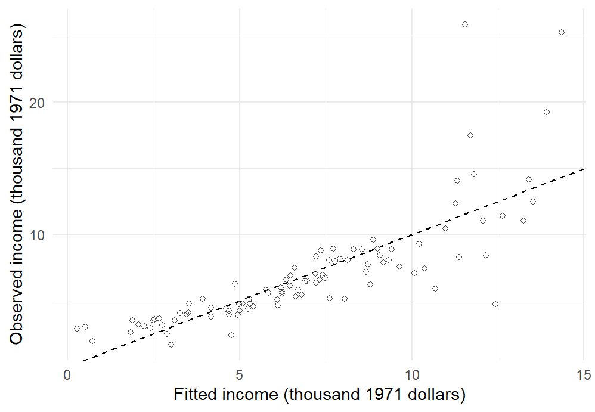
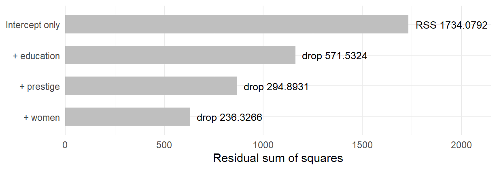
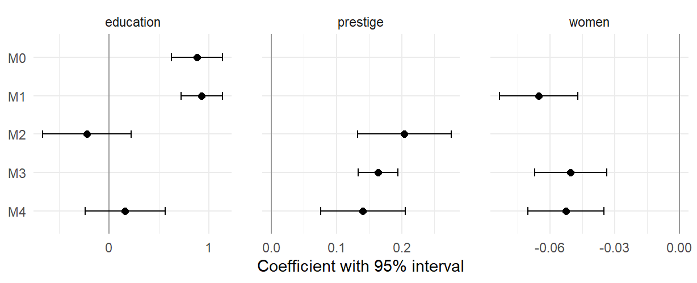
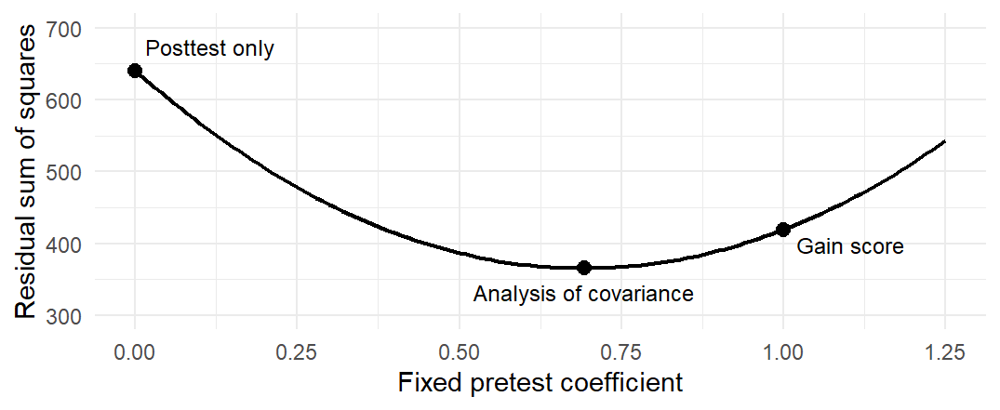

c(original = nrow(d0), retained = nrow(dat))
table(dat$type)Multiple Regression I: Adjusted Relationships, Group Comparisons, and Model Comparison
NoteChapter overview
Multiple regression relates an outcome to several predictors at once, so that each coefficient describes a relationship with the other predictors held fixed. This chapter starts from a puzzle in the occupation records of Chapter 7: the education slope changes, and even reverses, when other characteristics of the occupations enter the model. It writes the multiple regression model, says what a partial slope compares, and uses a simulated process to show what confounding and statistical control mean. It then fits and reads the model, attaches a standard error and an interval to a partial slope, and compares models with \(R^2\) and adjusted \(R^2\), nested \(F\) and likelihood-ratio tests, and the information criteria AIC and BIC. Categorical predictors then enter the same framework as indicator variables. It closes with fitted predictions at a stated profile and with adjusted group means, using a randomized reading study analyzed with and without its pretest. By the end you will be able to write, fit and read an additive multiple regression in R, interpret partial slopes and indicator coefficients by naming what is held fixed, test a block of predictors, and explain what covariance adjustment does and does not supply.
Many outcomes in social and behavioral research are related to several predictors at the same time. Typical questions include:
- To what extent does \(x_1\) predict \(y\) after controlling for \(x_2\) and \(x_3\)?
- Does the relationship between \(x\) and \(y\) remain after accounting for possible confounders?
- Do groups differ on an outcome, and do they still differ after adjustment for other variables?
- Does a more complex model improve meaningfully on a simpler one?
Multiple regression answers all four within one framework. The key change from simple regression is that a regression coefficient now describes a partial or adjusted relationship: the expected difference in the outcome for a one-unit difference in one predictor while the other predictors in the model are held fixed. The same predictor can therefore have different coefficients in different models, depending on what else is included. A simple regression models an outcome with one predictor, \(y_i=\beta_0+\beta_1x_i+\varepsilon_i\); multiple regression keeps that form and adds one term for each further predictor. Once several predictors are present, the model must be built and read with care: which predictors enter, what each coefficient holds fixed, and whether a larger model improves on a smaller one. Group comparisons fit the same framework through indicator variables, so multiple regression, group comparisons and model comparison become parts of one approach.
The records are the Prestige data distributed with the carData package (Fox et al., 2022; Fox & Weisberg, 2019), whose documentation describes the variables; the analyses are ours.
From a Simple Slope to an Adjusted Relationship
The occupation records and a changing slope
A row is an occupation, not a worker. Income is the occupation’s average annual income in 1971 Canadian dollars, divided here by 1,000; education is average years of education; women is the percentage of women; prestige is a rating from a mid-1960s survey, earlier than the 1971 income and education; and type is blue-collar (bc), professional/managerial/technical (prof), or white-collar (wc). These historical occupational averages are not current individual earnings.
Chapter 7 used all 102 occupations. The full variable set leaves 98 complete records, because athletes, newsboys, babysitters, and farmers have no recorded type; the three types keep 44, 31, and 23 records. We keep the source row order. The original 102 records are d0; dat holds the 98 complete records, with income_k in thousand dollars and type levels ordered bc, prof, wc.
We refit the education-only model on these same 98 records before any adjusted comparison, so that the move from 102 to 98, a change in which records are described, is never presented as an adjustment effect. Complete records make the computations comparable; they do not make the omitted occupations irrelevant or the 98 a probability sample of Canadian occupations.
Three fits on these records set the chapter’s question: education alone, education with the percentage of women, and education with prestige.
m0 <- lm(income_k ~ education, data = dat)
m1 <- lm(income_k ~ education + women, data = dat)
m2 <- lm(income_k ~ education + prestige, data = dat)
sapply(list(alone = m0, with_women = m1, with_prestige = m2),
function(fit) unname(coef(fit)["education"])) alone with_women with_prestige
0.8830186 0.9292268 -0.2178994 | Records and predictors | Education slope | In-sample \(R^2\) | What is held fixed |
|---|---|---|---|
| Earlier 102, education only | 0.8988 | .3336 | Nothing; Chapter 7’s line on different records |
| Same 98, education only | 0.8830 | .3296 | Nothing; the marginal description |
| Same 98, education and women | 0.9292 | .5641 | The percentage of women |
| Same 98, education and prestige | \(-0.2179\) | .4996 | Prestige |
Holding the percentage of women fixed barely moves the education slope, from 0.8830 to 0.9292 thousand dollars per year. Holding prestige fixed reverses it, to \(-0.2179\). Why should the choice of a second predictor matter so much, and which slope answers the question? Section 1.2 writes the model that gives these slopes a meaning, Section 1.3 says what a partial slope compares, Section 1.4 watches the same behaviour in a process whose values we know, and Section 1.5 returns to the occupations.
The multiple regression model
Suppose we want to predict an outcome \(y\) from \(p\) predictors \(x_1,\ldots,x_p\). The population form of the multiple regression model is
\[ y=\beta_0+\beta_1x_1+\cdots+\beta_jx_j+\cdots+\beta_px_p+\varepsilon, \qquad \varepsilon\sim\mathcal N(0,\sigma^2). \]
Here \(y\), the \(x_j\) and \(\varepsilon\) are variables, and the error \(\varepsilon\) collects random noise and the factors the predictors omit. The model has three kinds of parameters:
- \(\beta_0\), the intercept, is the mean of \(y\) when every predictor is zero. It describes real units only if that combination is plausible within the data; otherwise it anchors the equation.
- \(\beta_j\), the partial slope of \(x_j\), is the difference in the mean of \(y\) for a one-unit difference in \(x_j\), holding the other predictors fixed. There are \(p\) partial slopes, one for each predictor.
- \(\sigma\), the error SD, is the typical spread of outcomes around the mean at fixed predictor values: the variation the predictors leave unexplained.
The holding-fixed reading of \(\beta_j\) is the main conceptual shift from simple to multiple regression. The sum \(\beta_0+\beta_1x_1+\cdots+\beta_px_p\) is the linear predictor: the model states that the conditional mean of \(y\) is a linear combination of the predictors, and with Normal errors it is equivalent to \(y\mid x_1,\ldots,x_p\sim\mathcal N(\beta_0+\beta_1x_1+\cdots+\beta_px_p,\ \sigma^2)\). The model is additive: each predictor contributes its own term, and the slope of one predictor does not depend on the value of another. Chapter 10 relaxes this with interactions.
Tip
Unique contribution. The coefficient \(\beta_j\) describes the contribution of \(x_j\) to the outcome after the other predictors in the model are statistically controlled for: the part of \(x_j\) that predicts \(y\) beyond what the other predictors already explain. The same predictor can therefore have different coefficients, and different interpretations, in models with different predictors.
The observation form writes the model for the recorded data,
\[ y_i=\beta_0+\beta_1x_{i1}+\cdots+\beta_px_{ip}+\varepsilon_i, \qquad \varepsilon_i\stackrel{iid}{\sim}\mathcal N(0,\sigma^2), \qquad i=1,\ldots,n, \]
where \(y_i\) and \(x_{ij}\) are the values of unit \(i\). The notation \(\stackrel{iid}{\sim}\) states the assumptions of linear regression at every combination of predictor values: the errors are independent, average zero, share one variance \(\sigma^2\), and are Normal. The intervals in this chapter need independent errors, the classical SE also needs the common variance, and the exact \(t\) reference also needs Normal errors; Chapter 9 checks these assumptions for several predictors and relaxes the common variance. The model has \(p+1\) coefficients, counting the intercept, so estimating them leaves \(n-p-1\) residual degrees of freedom: the residuals satisfy one linear constraint for each fitted coefficient, so only \(n-p-1\) of them are free to vary, \(n-2\) for a single predictor. A factor with \(J\) categories enters as \(J-1\) indicator columns, each counted in \(p\) (Section 4.1), and Section 4.4 writes the model compactly with vectors and a matrix.
Writing the model is also a decision about specification: which predictors the research question needs, which serve as controls, and how each one enters the equation. Three consequences follow. First, a partial slope is conditional on the other predictors in the model, so the same predictor can have different coefficients in different models, as Table 1 already showed. Second, predictors can enter in different forms: a numerical predictor as one column, a categorical one as indicator columns (Section 4), and a curved relationship through a squared or transformed term (Chapter 9, Section 5). Third, adding predictors does not automatically make a model better. A larger model fits the same records at least as well, but it may add redundant terms or terms with little unique contribution, and Section 3 weighs that trade.
What a partial slope compares
Take two predictors, \(x_1\) and \(x_2\). The model mean is \(\mu(x_1,x_2)=\beta_0+\beta_1x_1+\beta_2x_2\). Comparing two means a unit apart in \(x_1\) at the same \(x_2\) gives
\[ \mu(x_1+1,x_2)-\mu(x_1,x_2)=\beta_1(x_1+1)-\beta_1x_1=\beta_1. \]
All the shared terms cancel. Holding constant names this comparison of model means; it does not mean that \(x_1\) was changed experimentally, that two observed units match on everything else, or that unmeasured differences have been controlled. A partial slope’s meaning belongs to its named conditioning set. The same predictor can have a different coefficient when a different set is held fixed. The additive form also makes its comparison the same at every value of the other predictors; Chapter 10 asks when that comparison itself varies.
Partial correlation holds variables fixed another way, by residualizing: it removes their fitted linear parts from two variables before correlating what remains. A fitted equation with several predictors holds the others fixed directly, because two of its fitted means that differ in one predictor share every other term; Section 2.2 shows that the two routes give the same slope, and Section 5.2 applies the same idea to adjusted group means in the analysis of covariance.
This conditional comparison is why multiple regression is used for statistical control. Suppose the question concerns \(x_1\) and \(y\), and another variable \(x_2\) is related to \(y\) and correlated with \(x_1\). The simple slope of \(y\) on \(x_1\) then mixes two comparisons: units that differ in \(x_1\), and the differences in \(x_2\) that come with differences in \(x_1\). In the broad regression sense used here, confounding occurs when the observed relationship between a focal predictor and the outcome is partly distorted in this way by a variable associated with both; Chapter 14 develops the causal meaning of the term. Including \(x_2\) in the model makes the coefficient of \(x_1\) a comparison at the same \(x_2\). Statistical control is often useful, but it yields an adjusted association, not automatically a causal effect: it adjusts only for the variables that are measured and included, in the form the model gives them, and only under the model’s conditions.
A known process with two predictors
A known process makes the comparison concrete. Suppose
\[ y=50+2x_1+5x_2+\varepsilon, \qquad E(\varepsilon\mid x_1,x_2)=0, \]
with finite variances and \(\operatorname{Cov}(x_1,x_2)/\operatorname{Var}(x_1)=0.65\). The conditional \(x_1\) coefficient is 2, and the marginal linear slope is
\[ \frac{\operatorname{Cov}(x_1,y)}{\operatorname{Var}(x_1)} =2+5\frac{\operatorname{Cov}(x_1,x_2)}{\operatorname{Var}(x_1)} =2+5(0.65)=5.25. \]
Generate independent standard Normal values \(x_1\) and \(u\), let \(x_2=.65x_1+\sqrt{1-.65^2}u\), and add independent Normal errors with SD 6. Both predictors then have variance one and correlation .65. Figure 1 draws one generated sample of 250 cases from this process, with the process’s own mean lines rather than fitted ones. Each solid line holds \(x_2\) at one value and rises 2 for each unit of \(x_1\). The dashed marginal line rises 5.25, because higher \(x_1\) comes with higher \(x_2\) (the darker points sit toward the upper right) and the marginal line carries that association along.

With these generated columns named x1, x2 and y in sim, the following calls estimate the marginal and conditional equations. The short examples throughout this chapter show the statistical operation on the data just described.
coef(lm(y ~ x1, data = sim))
coef(lm(y ~ x1 + x2, data = sim))In this sample the fitted \(x_1\) coefficient is 3.0259 (SE 0.5325), the \(x_2\) coefficient 4.3991 (SE 0.5282), and the marginal slope 5.9971 (SE 0.4466). Each lies within two SEs of its programmed value, 2, 5, and 5.25 respectively. A single sample estimates the process rather than reproducing its parameters exactly.
The fitted equation gives the same picture as the process. Because a least-squares fit with an intercept passes through the mean point, it can be written in mean-centered form,
\[ \widehat y=\bar y+\widehat\beta_1(x_1-\bar x_1)+\widehat\beta_2(x_2-\bar x_2). \]
Fixing \(x_2\) at its mean, \(x_2=\bar x_2\), gives the adjusted line for \(x_1\),
\[ \widehat y=(\bar y-\widehat\beta_1\bar x_1)+\widehat\beta_1x_1 \qquad (x_2=\bar x_2), \]
which rises 3.0259 per unit of \(x_1\), whereas the simple line from regressing \(y\) on \(x_1\) alone rises 5.9971. The two lines differ because \(x_1\) and \(x_2\) are related and both predict the outcome: the simple slope partly absorbs the association of \(x_2\), while the adjusted slope isolates the unique contribution of \(x_1\). This is the essence of statistical control. In short,
- the simple slope describes the bivariate relationship between \(x_1\) and \(y\);
- the partial slope describes the relationship between \(x_1\) and \(y\) with the other predictors held fixed.
Mapping x1 and y to position and x2 to colour draws the points in Figure 1. The fitted slopes and the known process lines answer related but distinct questions.
library(ggplot2)
ggplot(sim, aes(x1, y, colour = x2)) + geom_point()The two slopes answer different questions: one holds \(x_2\) fixed, the other includes how \(x_2\) moves with \(x_1\), and neither alone says what would happen if someone intervened on \(x_1\). Calling 5.25 “biased” requires naming the target it is used for; as the marginal linear slope it is correct. Appendix A gives the derivation and the repeated samples.
Why the occupation slope changed
The education-and-women fit gives a concrete reading: two occupations one year apart in education, with the same percentage of women, differ in fitted income by 0.9292 thousand dollars (education SE 0.1044). At the same education, one percentage point more women corresponds to 0.0654 thousand dollars lower fitted income (SE 0.0091). Its \(R^2\) is .5641. These are comparisons of occupations, not effects of changing an individual’s education or occupation.
Why does adding prestige reverse the education slope while adding women barely changes it? Education correlates .8665 with prestige and .0619 with women. Correlation alone is only part of the explanation: how far the education slope moves depends on the added predictor’s coefficient and its slope on education. For least-squares fits on the same rows, the sample omitted-variable identity is
\[ \begin{aligned} \text{marginal slope}&=\text{slope with }x_2\\ &\quad+(\text{coefficient of }x_2)(\text{slope of }x_2\text{ on education}),\\ 0.8830&=-0.2179+0.2043(5.3884)\qquad(x_2=\text{prestige}),\\ 0.8830&=0.9292+(-0.0654)(0.7069)\qquad(x_2=\text{women}). \end{aligned} \]
Appendix A derives the identity; the displayed numbers are rounded. The carried parts are 1.1009 for prestige and \(-0.0462\) for women. Figure 2 shows the corresponding fitted lines beside the marginal line, extending the known-process display to real records.

In panel (a), each solid line falls 0.2179 per education year at fixed prestige. The higher-prestige lines sit over higher education, so the rising marginal line crosses them. In panel (b), the solid lines rise 0.9292 per year, nearly the marginal slope, because women hardly tracks education. Each line uses the education range among records within 7.5 points of its held value, a display choice that respects nearby observations; Sections 4.4 and 5.1 check support more fully.
For example, the first panel’s line at prestige 50 combines the fitted intercept with 50 times the prestige coefficient \(\widehat\beta_2\); its slope is the education coefficient \(\widehat\beta_1\). The nearby points keep the comparison close to observed education values.
near <- dat[abs(dat$prestige - 50) <= 7.5, ]
ggplot(near, aes(education, income_k)) + geom_point() +
geom_abline(intercept = coef(m2)[1] + 50*coef(m2)["prestige"],
slope = coef(m2)["education"])The sequence of slopes names different comparisons; it is not a true effect being explained away. Adding predictors on the same rows cannot increase the smallest achievable RSS, so training \(R^2\) cannot fall. The separate gains need not add up: women adds .2345, prestige adds .1701, and the two together add .3063 over education alone. These gains describe fit to the same records; Section 3 asks when an added term earns its place.
Estimating and Interpreting the Model
We now fit the model with all three quantitative predictors,
\[ \mathrm{income}_k=\beta_0+\beta_1x_1+\beta_2x_2+\beta_3x_3+\varepsilon, \]
where \(x_1\) is education, \(x_2\) prestige and \(x_3\) the percentage of women, so \(p=3\); Section 3 calls this model \(M_4\). The question concerns \(\beta_1\): how income differs with education at the same prestige and percentage of women. Section 4 adds occupational type.
Least squares, fitted values and fit
The principles of least squares carry over from simple regression unchanged. The fitted value for record \(i\),
\[ \widehat y_i=\widehat\beta_0+\widehat\beta_1x_{i1}+\cdots+\widehat\beta_px_{ip}, \]
is the estimated linear predictor, a one-number summary of the predictive information in all the predictors together. The residual is \(e_i=y_i-\widehat y_i\), and least squares chooses the coefficients that minimize the residual sum of squares, \(RSS=\sum_ie_i^2\). The closed-form solution needs matrix algebra (Chapter 9, Appendix A), but the logic is the same as for one predictor: the fitted equation is the linear combination of the predictors with the smallest sum of squared residuals in the records. The other quantities of simple regression generalize directly:
- the total sum of squares, \(TSS=\sum_i(y_i-\bar y)^2\);
- the regression sum of squares, \(RegSS=\sum_i(\widehat y_i-\bar y)^2\);
- the decomposition \(TSS=RegSS+RSS\);
- the residual degrees of freedom, \(n-p-1\);
- the residual SD, or residual standard error, \(s_e=\sqrt{RSS/(n-p-1)}\), which estimates \(\sigma\) and gives the typical distance of the outcomes from the fitted equation.
m4 <- lm(income_k ~ education + prestige + women, data = dat)
coef(m4)(Intercept) education prestige women
0.05809166 0.16246686 0.14064530 -0.05276664 c(residual_SD = sigma(m4), R_squared = summary(m4)$r.squared)residual_SD R_squared
2.5915722 0.6359294 The fitted equation is
\[ \widehat{\mathrm{income}}_k=0.0581+0.1625x_1+0.1406x_2-0.0528x_3. \]
Two occupations one year apart in education, with the same prestige and percentage of women, differ in fitted income by 0.1625 thousand dollars, about 162 dollars. At the same education and percentage of women, one prestige point corresponds to about 141 dollars more; at the same education and prestige, one percentage point more women corresponds to about 53 dollars less. Each sentence names what is held fixed. The intercept refers to an occupation with zero education, prestige and women, a combination far outside the records, so it anchors the fitted equation rather than describing an occupation. The sums of squares split as \(1734.0792=1102.7520+631.3272\), the residual SD is 2.5916 thousand dollars on \(98-3-1=94\) df, and \(R^2=.6359\).
With several predictors no single scatterplot shows the fitted equation. Plotting each occupation’s observed income against its fitted income summarizes the whole model in one display (Figure 3): points on the dashed diagonal are fitted exactly, and vertical distances from it are the residuals. \(R^2\) is the squared correlation between the two axes, \(r_{y\widehat y}^2=.6359\), an identity that holds for any least-squares fit with an intercept; with several predictors it is the natural way to read \(R^2\).

Eighty-nine of the 98 occupations lie within 3 thousand dollars of their fitted income. A few high-income occupations lie far above the diagonal: general managers by 14.32 thousand dollars and physicians by 10.95. Chapter 9 asks how much such records move the fitted equation.
The partial slope from residuals
The partial slope can be recovered by removing the fitted parts of the other predictors from both variables. Regress education on prestige and the percentage of women and keep the residuals \(r_{x_1,i}\); do the same for income to obtain \(r_{y,i}\). Both auxiliary fits include an intercept and use exactly the 98 rows of the full fit. Then
\[ \widehat\beta_1=\frac{\sum_i r_{x_1,i}r_{y,i}}{\sum_i r_{x_1,i}^2} =r_{y1\cdot23}\frac{s_{r_y}}{s_{r_{x_1}}}, \]
where \(r_{y1\cdot23}\), the correlation of the two residual vectors, is the partial correlation of income and education given predictors 2 and 3, prestige and the percentage of women. The numerator is the linear co-variation left after the controls and the denominator the education variation left; the ratio of residual SDs turns the unit-free correlation into thousand dollars per education year.
r_x1 <- residuals(lm(education ~ prestige + women, data = dat))
r_y <- residuals(lm(income_k ~ prestige + women, data = dat))
sum(r_x1 * r_y) / sum(r_x1^2)To attach uncertainty, apply Section 1.2’s model to the occupation records: incomes vary independently around the linear mean at the recorded predictor rows, with a common error SD \(\sigma\), which the residual SD 2.5916 estimates. The repetition imagined for the classical intervals is new incomes at the same 98 predictor rows; the historical records do not establish that model or a probability sample.
The uncertainty must count the fitted controls. Prestige and women supply one column each, so with education and the intercept the model estimates \(p+1=4\) coefficients from \(n=98\) rows, leaving \(n-p-1=94\) residual degrees of freedom. Using the residual variance \(s_e^2=RSS/(n-p-1)\) of Section 2.1,
\[ SE(\widehat\beta_1)=\sqrt{\frac{s_e^2} {\sum_i r_{x_1,i}^2}}, \qquad t_1=r_{y1\cdot23}\sqrt{\frac{n-p-1}{1-r_{y1\cdot23}^2}}. \]
The slope identity is algebraic; the SE and the \(t_{94}\) reference for \(H_0:\beta_1=0\) rest on the classical model of Section 1.2. These formulas reproduce the education row of m4: slope 0.1625, SE 0.2022 and \(t=0.8036\), with partial correlation .0826. A fresh regression of residual income on residual education returns the same slope but counts \(98-2=96\) df, as if fitting the two control columns had cost nothing, so its SE, 0.2001, is too small by the factor \(\sqrt{94/96}\). Use m4, or the formulas with \(n-p-1=94\), for uncertainty.
Only the education variation left after the controls informs this coefficient: its residual SD is 1.3015 years, against 2.7489 before residualizing. The added-variable display below shows what remains.

Figure 4 sets the two comparisons side by side. The marginal line rises 0.8830 per year; after the fitted linear parts of prestige and women are removed from both variables, the residual line rises only 0.1625, with wide scatter around it. Residualizing removes those fitted linear components, not every substantive difference between occupations. The residualized panel can be drawn directly from these two residual vectors and the model’s slope.
ggplot(data.frame(r_x1, r_y), aes(r_x1, r_y)) + geom_point() +
geom_abline(intercept = 0, slope = coef(m4)["education"])Two covariance matrices
Covariance now has two meanings. cov() describes how recorded variables spread and move together; vcov() estimates the covariance of the fitted coefficients. Table 2 compares them on the same 98 rows.
| Recorded-data covariance | Coefficient covariance | |
|---|---|---|
| R call | cov() of income, education, prestige and women |
vcov(m4) |
| Rows and columns | 4 numeric variables | 4 fitted coefficients, including the intercept |
| Diagonal entries | Sample variances | Squared coefficient SEs |
| Off-diagonal entries | Sample covariances between variables | Joint uncertainty of two coefficients |
| Education entry | 7.5567 years squared | 0.0409; its square root is the SE 0.2022 |
| Question it answers | How the recorded variables spread and move together across occupations | How uncertain the fitted coefficients are, and how their errors move together |
cov(dat[c("income_k", "education", "prestige", "women")])
vcov(m4)The recorded-data variance of education is 7.5567 years squared. The coefficient variance of 0.0409 describes uncertainty in the fitted education slope. Its square root gives the slope’s SE of 0.2022 thousand dollars per year of education. The coefficient covariance matrix also gives the SE of a linear combination of coefficients, such as a contrast between groups (Section 4.6) or a fitted mean at a stated profile (Section 5.1).
Intervals and tests for a coefficient
At confidence level \(C=1-\alpha\), the classical interval for any coefficient is \(\widehat\beta_j\pm t_cSE(\widehat\beta_j)\), \(j=0,\ldots,p\), where \(t_c\) is the critical value of the \(t\) distribution with \(n-p-1\) degrees of freedom. With 94 residual degrees of freedom, the 95% interval for education is
\[ \begin{aligned} \widehat\beta_1\pm t_{.975,94}SE(\widehat\beta_1) &=0.1625\pm1.9855(0.2022)\\ &\approx[-0.2390,\ 0.5639]. \end{aligned} \]
Under the classical assumptions the interval is compatible with negative and positive conditional slopes, from about 239 dollars lower to about 564 dollars higher per year of education. With no margin of practical equivalence declared, the direction and the practically relevant size remain unresolved; the interval does not show that the slope is zero or that adjustment has removed an effect of education.
confint(m4, "education") 2.5 % 97.5 %
education -0.2389744 0.5639081The matching test addresses \(H_0:\beta_1=0\) in the stated model, not “education has no effect”. Its classical \(t=0.8036\) and \(p=.4237\) do not prove the null. Section 3 tests several coefficients jointly and compares whole models.
Not every change to a model changes the scientific estimand. In a randomized study, well-specified covariate adjustment can estimate the same declared average assignment effect more precisely (Section 5.3); releveling a factor changes the coefficient coordinates but not the fitted values (Section 4.5); and a different uncertainty estimator changes the interval but not the coefficient.
Comparing Models
Once a model is fitted, two related questions follow. Model evaluation asks how well a model fits the records; model comparison asks which of several candidate models is preferable. The two are connected: a better model should fit the records well, but without unnecessary complexity. Several models are plausible for occupational income, depending on which predictors they include. Some are nested within others, and some are alternative specifications that are not. No single statistic serves every comparison, so this section develops several and then uses them together on five candidates fitted to the same 98 records:
\[ \begin{aligned} M_0&:\ \mathrm{income}_k=\beta_0+\beta_1\,\mathrm{education}+\varepsilon,\\ M_1&:\ \mathrm{income}_k=\beta_0+\beta_1\,\mathrm{education}+\beta_2\,\mathrm{women}+\varepsilon,\\ M_2&:\ \mathrm{income}_k=\beta_0+\beta_1\,\mathrm{education}+\beta_2\,\mathrm{prestige}+\varepsilon,\\ M_3&:\ \mathrm{income}_k=\beta_0+\beta_1\,\mathrm{prestige}+\beta_2\,\mathrm{women}+\varepsilon,\\ M_4&:\ \mathrm{income}_k=\beta_0+\beta_1\,\mathrm{education}+\beta_2\,\mathrm{prestige}+\beta_3\,\mathrm{women}+\varepsilon. \end{aligned} \]
\(M_0\) is the simple regression on education refitted to the 98 records, \(M_1\) and \(M_2\) are the two fits of Section 1.1, and \(M_4\) is the model of Section 2. Each model’s coefficients belong to that model: as Section 1 showed, the education coefficient of \(M_0\) and that of \(M_4\) answer different questions. In R the five fits are m0 to m4; only \(M_3\) is new.
m3 <- lm(income_k ~ prestige + women, data = dat)\(R^2\) and adjusted \(R^2\)
The coefficient of determination of Section 2.1, \(R^2=1-RSS/TSS=r_{y\widehat y}^2\), is the proportion of the variation in income accounted for jointly by all the predictors; its square root \(R\) is the multiple correlation. A larger \(R^2\) means fitted values closer to the observed outcomes. In multiple regression, however, \(R^2\) never decreases when a predictor is added to a model fitted to the same records, even a predictor that contributes almost nothing: least squares could always give the new predictor a zero coefficient, so the smallest achievable RSS cannot rise. \(R^2\) alone therefore cannot compare models with different numbers of predictors.
Adjusted \(R^2\) divides each sum of squares by its degrees of freedom,
\[ R^2_{\mathrm{adj}}=1-\frac{RSS/(n-p-1)}{TSS/(n-1)} =1-(1-R^2)\frac{n-1}{n-p-1}. \]
It penalizes the number of predictors \(p\): an added predictor raises adjusted \(R^2\) only if it lowers the RSS by more than one residual mean square, that is, only if its partial \(F\) statistic of Section 3.3 exceeds 1. Adding education to \(M_3\) raises \(R^2\) from .6334 to .6359 but lowers adjusted \(R^2\) from .6257 to .6243.
The overall \(F\) test
A model with predictors fits at least as well as one common mean, so a formal test asks whether the predictors as a set contribute anything. The overall \(F\) test, or omnibus test, sets
\[ H_0:\beta_1=\beta_2=\cdots=\beta_p=0 \quad\text{against}\quad H_a:\ \text{at least one }\beta_j\neq0. \]
Under \(H_0\) the predictors explain no variation beyond the intercept. The statistic divides the regression mean square by the residual mean square, the two mean squares of a regression’s analysis-of-variance table:
\[ F=\frac{RegSS/p}{RSS/(n-p-1)}=\frac{MSR}{MSE}. \]
Under the Normal-error model and \(H_0\) it has an \(F\) reference with \(p\) and \(n-p-1\) degrees of freedom. The one-way analysis-of-variance \(F\), which compares one common mean with separate group means, is the special case in which the predictors are group indicators (Section 4.3).
summary(m4)$fstatistic value numdf dendf
54.73057 3.00000 94.00000 For \(M_4\), \(F(3,94)=(1102.752/3)/(631.3272/94)=54.7306\), \(p<.0001\): the three predictors together improve on one common mean. A significant overall \(F\) does not mean that every predictor matters; education’s own \(t\) in Section 2.4 was 0.8036. With one predictor the overall \(F\) is the square of the slope’s \(t\): for \(M_0\), \(F(1,96)=47.1956=6.8699^2\). A larger \(F\) for one model than another is not evidence of a better model, because the two statistics test different restrictions, and neither checks the mean function.
Nested models and the partial \(F\) test
Many comparisons in regression concern nested models. A reduced model is nested within a full model when it is the full model with some coefficients set to zero, and both are fitted to the same records and outcome. \(M_3\) is nested in \(M_4\), with education’s coefficient set to zero, and \(M_0\) is nested in \(M_1\), \(M_2\) and \(M_4\). \(M_1\) and \(M_3\) are not nested, because neither contains the other.
Extra coefficients never raise the residual sum of squares; the question is whether they lower it by more than noise alone would. The partial \(F\) test, or extra-sum-of-squares test, compares the two residual sums of squares:
\[ F=\frac{(RSS_R-RSS_F)/q}{RSS_F/(n-p_F-1)}, \]
where \(RSS_R\) and \(RSS_F\) are the residual sums of squares of the reduced and full models, \(p_F\) is the number of predictors in the full model, and \(q\) is the number of added predictors. The numerator is the drop that the \(q\) extra coefficients buy, per coefficient; the denominator is the full model’s residual mean square, the same \(s_e^2\) that appears in every classical standard error. When the reduced model’s restrictions hold, under the Normal linear model with independent common-variance errors, the ratio has an exact \(F\) reference with \(q\) and \(n-p_F-1\) degrees of freedom. The overall test is the special case whose reduced model is the intercept alone.

Figure 5 shows what each addition buys when the predictors enter in one order. Education buys 571.5324 of the total 1734.0792, prestige a further 294.8931, and the percentage of women 236.3266. Adding education last, to prestige and women, asks a different question:
anova(m3, m4)| Res.Df | RSS | Df | Sum of Sq | F | Pr(>F) |
|---|---|---|---|---|---|
| 95 | 635.6639 | NA | NA | NA | NA |
| 94 | 631.3272 | 1 | 4.336729 | 0.6457072 | 0.423679 |
Here \(F=\{(635.6639-631.3272)/1\}/(631.3272/94)=0.6457\) on 1 and 94 df, \(p=.4237\). For a single added coefficient the partial \(F\) is the square of that coefficient’s \(t\) in the full model, \(0.8036^2\), so the test repeats Section 2.4’s. Adding women to \(M_2\) instead gives \(F(1,94)=35.1873\), \(p<.0001\). A block test applies the same statistic to several coefficients jointly: adding prestige and women together to \(M_0\) gives \(F(2,94)=39.5474\), \(p<.0001\). Joint evidence for a block does not show that each coefficient in it contributes; Section 4.4 tests the block of occupation-type indicators.
The subtraction means something only when both models use the same rows and the same outcome, which is why every comparison in this chapter runs on the same 98 records. A single anova(m4) answers a different question: it gives sequential sums of squares, in which each line tests a term given only the terms above it in the formula, so the answers depend on the order of the formula and only the last line matches a partial \(F\) test.
| Predictor | Alone | Sequential | Entered last |
|---|---|---|---|
| Education | 571.5324 | 571.5324 | 4.3367 |
| Prestige | 857.7521 | 294.8931 | 124.6393 |
| Women | 347.6258 | 236.3266 | 236.3266 |
| Sum | 1776.9103 | 1102.7520 | 365.3026 |
In Table 3, alone is the drop from the TSS of 1734.0792 when the predictor is the only one, sequential is anova(m4) in the formula order of Figure 5, and entered last is the drop when the predictor joins the other two. Only the sequential column adds up to the RegSS of \(M_4\), 1102.7520, in any order, but each predictor’s share depends on the order: entering women, prestige and education instead credits them with 347.6258, 750.7895 and 4.3367. Women, last in the formula, gets the same 236.3266 in both columns, which is why only the last sequential line is a partial \(F\) test. The last column, divided by its 1 df, is the partial \(F\) numerator, so \(F=SS_{\mathrm{last}}/s_e^2\) with \(s_e^2=6.7162\), which reproduces the 0.6457 of anova(m3, m4) for education. Because education and prestige overlap, the alone column sums to more than the RegSS and the last column to far less.
The likelihood and the likelihood-ratio test
Least squares chose the coefficients by one fitting criterion. A second criterion, the likelihood, gives another test for nested models and underlies the information criteria of Section 3.5. Like the residual sum of squares, the likelihood scores each candidate set of parameter values while the data stay fixed: it scores them by how probable, or for a continuous outcome how dense, the observed data are under the model. For the Normal linear model of Section 1.2 it is the joint density of the observed outcomes at their fixed predictor values, viewed as a function of the coefficients and \(\sigma\); it is not a probability assigned to a parameter. Because the records are independent, the log-likelihood adds their log densities:
\[ \ell(\beta_0,\ldots,\beta_p,\sigma)=-n\log\sigma-\frac n2\log(2\pi) -\frac{1}{2\sigma^2}\sum_i\left(y_i-\beta_0-\beta_1x_{i1}-\cdots-\beta_px_{ip}\right)^2. \]
At any fixed \(\sigma\) only the last term changes with the coefficients, so maximizing \(\ell\) over them minimizes the residual sum of squares: the maximum-likelihood coefficients equal the least-squares coefficients. This connects the squared-error criterion of least squares to the Normal model, although least squares did not need that model to calculate a fit. Maximizing over \(\sigma\) gives \(\widehat\sigma_{\mathrm{ML}}=\sqrt{RSS/n}\), which divides by \(n\) rather than by the residual degrees of freedom. The residual SD \(s_e=\sqrt{RSS/(n-p-1)}\) remains the estimate behind standard errors; the ML scale belongs only in the likelihood. At these values the maximized log-likelihood is
\[ \widehat\ell=-\frac n2\left\{\log(2\pi)+1+\log\frac{RSS}{n}\right\}, \]
so a smaller RSS means a larger maximized likelihood. For \(M_4\), \(\widehat\sigma_{\mathrm{ML}}=2.5381\) against \(s_e=2.5916\), and logLik(m4) returns \(\widehat\ell=-230.3360\).
The likelihood-ratio test compares nested models by how much the maximized log-likelihood rises when the restrictions are dropped:
\[ LR=2\left(\widehat\ell_F-\widehat\ell_R\right) =n\log\frac{RSS_R}{RSS_F}. \]
The quantity \(-2\widehat\ell\) is often called the deviance, so \(LR\) is the drop in \(-2\widehat\ell\) from the reduced to the full model. R uses the word differently for a linear model: deviance() of an lm() fit returns its residual sum of squares, so deviance(m3) - deviance(m4) gives the RSS reduction, 4.3367, not \(LR\). Compute \(LR\) from logLik(), as below. When the reduced model holds, \(LR\) has approximately a chi-square distribution with \(q\) degrees of freedom in large samples, and it is compared with a \(\chi^2_q\) critical value, 3.8415 for \(q=1\) at the 5% level. For \(M_3\) against \(M_4\),
\[ LR=98\log\frac{635.6639}{631.3272}=0.6709,\qquad p=.4127. \]
LR <- 2 * as.numeric(logLik(m4) - logLik(m3))
c(LR = LR, p = pchisq(LR, df = 1, lower.tail = FALSE)) LR p
0.6708825 0.4127441 The \(p\)-value is close to the partial \(F\) test’s .4237, and not by chance: both statistics are functions of the same two residual sums of squares, \(LR=n\log\{1+qF/(n-p_F-1)\}\). For comparisons with the same number of records, the same \(q\) and the same residual df, a larger \(F\) always means a larger \(LR\). Across different \(q\) the two can disagree: adding education and type to \(M_3\) (\(q=3\)) gives a smaller \(F\), 0.2321, but a larger \(LR\), 0.7388, than adding education alone. For a Normal linear model the \(F\) test is exact under the model, whereas the likelihood-ratio test relies on a large-sample approximation, so the \(F\) test is the standard choice for linear regression. The likelihood-ratio test matters because it extends to models that have no residual sum of squares, such as the logistic regression of Chapter 11, and because the likelihood also underlies the information criteria.
Information criteria: AIC and BIC
Nested tests compare a model with one it contains. Information criteria compare any models fitted to the same records and outcome, nested or not, by balancing fit against complexity. The Akaike information criterion (AIC) and the Bayesian information criterion (BIC) are
\[ AIC=-2\widehat\ell+2K,\qquad BIC=-2\widehat\ell+K\log n, \]
where \(\widehat\ell\) is the maximized log-likelihood, \(K\) the number of estimated parameters and \(n\) the number of records (Akaike, 1974; Schwarz, 1978). For a linear regression with \(p\) predictors \(K=p+2\): the \(p\) slopes, the intercept, and the error variance, so \(M_4\) has \(K=5\), not 4. Substituting the maximized Normal log-likelihood gives the least-squares forms
\[ AIC=n\log\frac{RSS}{n}+2K+c,\qquad BIC=n\log\frac{RSS}{n}+K\log n+c, \]
where \(c=n\{\log(2\pi)+1\}\) is the same for every model fitted to the same records and cancels from every comparison; R’s AIC() and BIC() include it. Smaller values are preferred, but only relative to other models fitted to the same records: a single AIC says nothing on its own, and a smaller AIC says that one candidate is preferred to another, not that either describes the records well.
The two criteria differ in their penalty. AIC charges 2 per parameter and BIC charges \(\log n\), which exceeds 2 once \(n\ge8\); for the 98 occupations \(\log n=4.585\). BIC therefore penalizes complexity more strongly and tends to favour smaller models, especially in large samples, whereas AIC tends to keep somewhat more complex ones. The likelihood-ratio statistic makes the penalties concrete. For nested models that differ by \(q\) parameters,
\[ AIC_F-AIC_R=2q-LR,\qquad BIC_F-BIC_R=q\log n-LR, \]
so AIC prefers the larger model when \(LR>2q\), and BIC when \(LR>q\log n\). Because \(LR\) has approximately a \(\chi^2_q\) reference when the reduced model holds, AIC acts like a test at level \(\Pr(\chi^2_q>2q)\) and BIC like one at level \(\Pr(\chi^2_q>q\log n)\). For one added parameter these levels are .1573 for AIC and, at \(n=98\), .0323 for BIC, beside the conventional .05. For two they are .1353 and .0102, and BIC’s level keeps falling as \(n\) grows. When the two criteria favour the same model, it is a strong candidate; when they disagree, the disagreement shows how strongly the extra parameters are charged, and the substantive question decides.
The criteria are comparable only among models fitted to the same records, with the same outcome on the same scale, under one likelihood convention. A model for log income has a different reference measure, so its criteria cannot be set beside these (Chapter 9, Section 5). Like \(R^2\) and adjusted \(R^2\), both criteria are calculated on the records that fitted the models, so neither is a held-out error (Chapter 13).
Comparing the occupation models
Table 4 sets the five candidates side by side. A first step is to look for a model with relatively large adjusted \(R^2\) and relatively small AIC and BIC.
models <- list(M0 = m0, M1 = m1, M2 = m2, M3 = m3, M4 = m4)
sapply(models, function(fit) c(adj_R2 = summary(fit)$adj.r.squared,
AIC = AIC(fit), BIC = BIC(fit)))| Model | Predictors | \(K\) | \(R^2\) | Adjusted \(R^2\) | AIC | BIC |
|---|---|---|---|---|---|---|
| \(M_0\) | Education | 3 | .3296 | .3226 | 526.5052 | 534.2601 |
| \(M_1\) | Education, women | 4 | .5641 | .5549 | 486.3288 | 496.6687 |
| \(M_2\) | Education, prestige | 4 | .4996 | .4891 | 499.8328 | 510.1727 |
| \(M_3\) | Prestige, women | 4 | .6334 | .6257 | 469.3428 | 479.6827 |
| \(M_4\) | Education, prestige, women | 5 | .6359 | .6243 | 470.6719 | 483.5968 |
\(M_3\), prestige with women, is best on all three penalized summaries. \(M_1\) and \(M_3\) are not nested, so no \(F\) test compares them, but the criteria can: both have \(K=4\), the penalties cancel, and \(M_3\) is preferred because it fits these records better. \(M_3\) and \(M_4\) are close, and because \(M_3\) is nested in \(M_4\) they can also be compared directly. The partial \(F(1,94)=0.6457\) and \(LR=0.6709\) say that adding education to prestige and women does not materially improve the fit, and both criteria rise, AIC by \(2-0.6709=1.3291\) and BIC by \(4.585-0.6709=3.9141\). If the question is which of these predictors describe income most economically, the simpler \(M_3\) is preferred.
Even when the simpler model is preferred statistically, the fuller one may be worth reporting if the added predictor matters to the question. A report whose question concerns education keeps education in the model: that its coefficient is small and imprecise once prestige and women are held fixed is itself the answer to that question. Plotting each coefficient with its interval across the candidates, as Figure 6 does, shows how each depends on what else the model contains.

The women coefficient barely moves across the models that contain it, from \(-0.0654\) to \(-0.0505\), and prestige moves modestly, from 0.2043 to 0.1406, but education moves from 0.9292 to \(-0.2179\) and its SE doubles, from 0.1044 to 0.2236, whenever prestige is present. Education and prestige overlap strongly (correlation .8665), so the records hold little information about one at a fixed value of the other; Chapter 9, Section 3, measures that overlap.
No single statistic should determine the choice. Model evaluation and comparison weigh four considerations together:
- fit: does the model account for substantial variation in the outcome?
- parsimony: does a simpler model perform nearly as well?
- statistical evidence: do the additional predictors improve the fit by more than chance would?
- substantive meaning: does the model answer the research question?
A model with slightly better fit is not always preferable if it is harder to interpret or its added predictors contribute little unique information, and a slightly more complex model may be worth keeping if it answers the question more directly. Model comparison is a substantive exercise as well as a statistical one, and a ranking is always relative to the candidates offered.
Categorical Predictors
One indicator, then several
The simplest case has no predictor at all: the intercept-only model \(y_i=\beta_0+\varepsilon_i\) estimates \(\beta_0\) by the sample mean, so estimating a mean is regressing the outcome on a constant. A single 0/1 predictor then compares two groups. Code membership \(x=0\) for a reference group and \(x=1\) for a comparison group. In \(y=\beta_0+\beta_1x+\varepsilon\) the mean is \(\beta_0\) in the reference group and \(\beta_0+\beta_1\) in the other, so the least-squares line passes through the two group means: the intercept is the reference group’s mean and the slope is the difference between the means, \(\widehat\beta_1=\bar y_1-\bar y_0\). The slope’s \(t\) test is the equal-variance two-sample \(t\) test written as a regression. The same idea extends to more than two groups.
A factor with \(J\) groups enters a regression as \(J-1\) indicator (or dummy) variables. Choose group 1 as the reference and define, for each other group, \(x_j=1\) if a case is in group \(j\) and \(x_j=0\) otherwise, \(j=2,\ldots,J\). The regression
\[ y=\beta_0+\beta_2x_2+\cdots+\beta_Jx_J+\varepsilon \]
maps onto the group means as
\[ \mu_1=\beta_0,\qquad \mu_j=\beta_0+\beta_j\quad(j\ge2): \]
the intercept is the reference group’s mean, and each indicator coefficient is a difference from it, \(\beta_j=\mu_j-\mu_1\). For the occupation types, with blue-collar as the reference, write \(x_{\mathrm{prof}}\) and \(x_{\mathrm{wc}}\) for the professional and white-collar indicators and \(\beta_{\mathrm{prof}}\) and \(\beta_{\mathrm{wc}}\) for their coefficients:
\[ \widehat y=\widehat\beta_0+\widehat\beta_{\mathrm{prof}}x_{\mathrm{prof}} +\widehat\beta_{\mathrm{wc}}x_{\mathrm{wc}},\qquad \widehat\mu_{\mathrm{bc}}=\widehat\beta_0,\quad \widehat\mu_{\mathrm{prof}}=\widehat\beta_0+\widehat\beta_{\mathrm{prof}},\quad \widehat\mu_{\mathrm{wc}}=\widehat\beta_0+\widehat\beta_{\mathrm{wc}}. \]
Two indicators, not three, carry three means. A third column would equal the intercept column minus the other two, so the design matrix would lose full rank and no coefficient would be separately estimable. Which level is omitted is a choice of coordinates, not a choice of model.
The 98 records hold 44 blue-collar, 31 professional, and 23 white-collar occupations. The type levels are ordered bc, prof, wc, so blue-collar is the reference. The rows were chosen because their records are complete, not sampled at random from a labour market.
What the indicator coefficients mean
Fit income on type alone and read the coefficients against Figure 7. A blue-collar occupation carries 0 in both indicator columns, a professional one a 1 in the first, and a white-collar one a 1 in the second, so each type’s fitted value is the intercept plus that type’s coefficient.
group_fit <- lm(income_k ~ type, data = dat)
coef(group_fit)(Intercept) typeprof typewc
5.374136 5.185315 -0.321832 ![Jittered open circles of income in thousand dollars for 44 blue-collar, 31 professional and 23 white-collar occupations, with a thick bar at each group mean, about 5.37, 10.56 and 5.05. A dashed horizontal line at the blue-collar mean runs across the plot. An upward arrow from the dashed line to the professional mean is labeled 5.1853 higher and a short downward arrow to the white-collar mean is labeled 0.3218 lower. Professional incomes spread from about 4.6 to 25.9 thousand dollars; the other two types stay below 9.](chapter_08_files/figure-html/fig-ch8-indicators-1.png)
The coefficients are 5.3741, 5.1853, and \(-0.3218\). The intercept is the blue-collar mean, the dashed line in the figure, and each coefficient is an arrow from that line to another type’s mean: professional occupations average 5.1853 thousand dollars more, white-collar occupations 0.3218 less. The fitted means, 5.3741, 10.5595, and 5.0523, are exactly the observed means, for the reason Appendix A gives: with one free parameter per group, least squares returns each group’s own mean. A group-only regression is therefore a description of three means, with no adjustment in it. The figure also shows the wide spread of professional incomes, from about 4.6 to 25.9 thousand dollars, which Chapter 9 takes up.
One-way analysis of variance as a regression
One-way analysis of variance compares one common mean with separate group means through between-group and within-group variation. In the group-only regression, equal means says that both indicator coefficients are zero. The between-group sum of squares is \(SS_B=595.9562\) on \(J-1=2\) degrees of freedom. The within-group sum of squares is the group-only model’s residual sum of squares, \(SS_W=1138.123\) on \(n-J=95\) degrees of freedom. The familiar calculation is
\[ F=\frac{MS_B}{MS_W}=\frac{SS_B/(J-1)}{SS_W/(n-J)} =\frac{595.9562/2}{1138.123/95}=24.8725,\qquad \eta^2=\frac{SS_B}{SS_T}=.3437. \]
The regression and ANOVA describe the same fitted means, so eta squared is also the group-only regression’s \(R^2\). The calculation is the overall \(F\) test of Section 3.2 applied to the group-only regression: the reduced model has only an intercept and the fuller one has two indicators, so \(H_0:\mu_{\mathrm{bc}}=\mu_{\mathrm{prof}}=\mu_{\mathrm{wc}}\) is the same hypothesis as \(H_0:\beta_{\mathrm{prof}}=\beta_{\mathrm{wc}}=0\). With exactly two groups it reduces to the squared \(t\) of the single indicator. The effect size \(\eta^2=.3437\) says that the three type means account for 34.37% of the variation in income across these occupations.
anova(lm(income_k ~ 1, data = dat), group_fit)| Res.Df | RSS | Df | Sum of Sq | F | Pr(>F) |
|---|---|---|---|---|---|
| 97 | 1734.079 | NA | NA | NA | NA |
| 95 | 1138.123 | 2 | 595.9562 | 24.87246 | 0 |
aov() returns the same statistic from the same fitted means, residual sum of squares, and degrees of freedom. The equality is algebraic: it holds whether or not group membership was randomized, so it supplies no causal warrant of its own. The omnibus \(F\) says that the three means are not all equal, not which differ. A comparison declared in advance needs no significant omnibus result first, while a comparison chosen after seeing the results needs a post-hoc calibration; Section 4.6 gives both.
Adding type to the model
Adding the two type indicators to Section 2’s three predictors gives the full occupation model, which we call \(M_5\),
\[ \mathrm{income}_k=\beta_0+\beta_1x_1+\beta_2x_2+\beta_3x_3 +\beta_{\mathrm{prof}}x_{\mathrm{prof}}+\beta_{\mathrm{wc}}x_{\mathrm{wc}} +\varepsilon, \]
where \(x_1\), \(x_2\) and \(x_3\) are education, prestige and the percentage of women, and each indicator is 1 for its named type. Blue-collar, with both indicators zero, is the reference type. There are \(p=5\) predictor columns and six coefficients. The conditional question concerns \(\beta_1\), comparing education at the same prestige, women and type. Least squares describes the recorded occupations whether or not that stochastic model holds; the conditions of Section 1.2 attach uncertainty to the coefficients.
m5 <- lm(income_k ~ education + prestige + women + type, data = dat)
coef(m5)(Intercept) education prestige women typeprof
0.4205235 0.1164336 0.1406054 -0.0535047 0.3241934
typewc
0.2353306 With blue-collar as reference, the full occupation fit is
\[ \begin{aligned} \widehat{\mathrm{income}}_k ={}&0.4205+0.1164x_1+0.1406x_2-0.0535x_3\\ &+0.3242x_{\mathrm{prof}}+0.2353x_{\mathrm{wc}}. \end{aligned} \]
Subtract two fitted means one education year apart at the same prestige, percentage of women and type. Every term except education cancels:
\[ \widehat m(x_1+1,x_2,x_3,\text{type})-\widehat m(x_1,x_2,x_3,\text{type}) =\widehat\beta_1=0.1164. \]
Thus two such occupations differ by about 116 dollars in fitted income. At the same values of all the other predictors, a prestige point compares about 141 dollars more, and a percentage point more women compares about 54 dollars less. Each sentence names what is held fixed.
Adding type moves the education coefficient from 0.1625 to 0.1164 and raises its SE from 0.2022 to 0.2752, because type overlaps strongly with education: professional occupations have the most education. Chapter 9, Section 3, measures that overlap. The type coefficients themselves compare types at the same education, prestige and percentage of women. The professional coefficient, 0.3242, is far smaller than the raw professional advantage of 5.1853 in Section 4.2, and the white-collar coefficient, 0.2353, has the opposite sign from the raw \(-0.3218\). The raw and adjusted comparisons answer different questions, and neither is “the effect of occupational type”.
Does type add anything once the other three predictors are present? The partial \(F\) test of Section 3.3 answers for the two indicators jointly, and a second block asks whether women and type together add to education and prestige:
anova(m4, m5)
anova(m2, m5)| Added block | df | \(F\) | \(p\) |
|---|---|---|---|
| Type, after education, prestige and women | 2 | 0.0319 | .9686 |
| Women and type, after education and prestige | 3 | 11.5088 | \(<.0001\) |
The type block is not supported: \(F(2,92)=0.0319\), \(p=.9686\), against a 5% critical value of 3.0954. The likelihood-ratio statistic, 0.0679 on 2 df, agrees; AIC rises from 470.6719 to 474.6040, BIC from 483.5968 to 492.6988, and adjusted \(R^2\) falls from .6243 to .6164. The second block is strongly supported, \(F(3,92)=11.5088\) against 2.7036, but joint evidence for it does not show that each added column contributes: the percentage of women could carry the whole block. Neither result shows that occupational type is irrelevant. Once education, prestige and the percentage of women are in the equation, the two type indicators reduce the residual sum of squares by only 0.4375 on these 98 records, where the types barely overlap on the other predictors.
Do the records support comparing types at the same values of the other predictors? Table 6 shows how far each variable extends within each recorded type.
| Type | n | Education | Prestige | Women |
|---|---|---|---|---|
| bc | 44 | 6.38–10.93 | 17.3–54.9 | 0.00–90.67 |
| prof | 31 | 11.09–15.97 | 53.8–87.2 | 0.58–96.12 |
| wc | 23 | 9.17–12.79 | 26.5–67.5 | 3.16–97.51 |
Blue-collar education ends at 10.93 years, below the professional minimum of 11.09, so comparing those types at the same education crosses a gap with no records. The model still returns predictions there, but software output does not create observations: a lack of support limits what the data can say about a comparison without making the comparison undefined.
The intercept refers to zero education, prestige, and women in the reference type; it anchors the fitted surface and need not describe a plausible occupation. Appendix A gives the group-mean and releveling calculations.
Each fitted value combines six multipliers, one for each coefficient. Table 7 puts them in coefficient order for three actual occupations and for a white-collar profile that Section 5.1 uses. The first multiplier is 1 because every fitted value includes the intercept. A professional record selects the professional coefficient, a white-collar record the white-collar coefficient, and a blue-collar record selects neither.
| Record or profile | Intercept | Education | Prestige | Women | Professional | White-collar |
|---|---|---|---|---|---|---|
| Nursing aides | 1 | 9.45 | 34.9 | 76.14 | 0 | 0 |
| Government administrators | 1 | 13.11 | 68.8 | 11.16 | 1 | 0 |
| Medical technicians | 1 | 12.79 | 67.5 | 76.04 | 0 | 1 |
| Declared white-collar profile | 1 | 11.00 | 45.0 | 50.00 | 0 | 1 |
This gives a concrete meaning to the vector notation. Write the multipliers as the column vector \(\mathbf x_i=(1,x_{i1},x_{i2},x_{i3},x_{\mathrm{prof},i},x_{\mathrm{wc},i})^{\mathsf T}\) and the corresponding coefficients as \(\boldsymbol\beta=(\beta_0,\beta_1,\beta_2,\beta_3, \beta_{\mathrm{prof}},\beta_{\mathrm{wc}})^{\mathsf T}\). A vector is an ordered collection of numbers; the superscript \(\mathsf T\) denotes the transpose, which turns a column into a row. The product \(\mathbf x_i^{\mathsf T}\boldsymbol\beta\) adds the six multiplier–coefficient products, exactly as the scalar equation does.
Stacking the 98 observed rows gives the \(98\times6\) design matrix \(\mathbf X\). Stacking the outcomes and errors gives the compact model \(\mathbf Y=\mathbf X\boldsymbol\beta+\boldsymbol\varepsilon\). The design matrix stores predictors and indicators, not income. Distinct coefficients require that no column be an exact linear combination of the others, the full-column-rank condition. Near collinearity affects precision, as Chapter 9, Section 3, explains. The profile is a new row for prediction, not an extra record used to fit the model. model.matrix() recovers the observed multiplier rows; multiplying row by the fitted coefficients recovers the profile’s fitted mean.
rows <- c("nursing.aides", "gov.administrators", "medical.technicians")
model.matrix(m5)[rows, ]
row <- c(1, 11, 45, 50, 0, 1)
sum(row * coef(m5))Section 5.1 uses this notation to carry coefficient uncertainty to the profile and checks whether its three continuous values occur together; Chapter 9, Appendix A, develops the matrix mathematics.
Changing the reference level
Releveling makes a different level the reference. Refit the group-only model with white-collar as the reference:
group_fit_wc <- lm(income_k ~ relevel(type, ref = "wc"), data = dat)
coef(group_fit_wc) (Intercept) relevel(type, ref = "wc")bc
5.052304 0.321832
relevel(type, ref = "wc")prof
5.507147 The coefficients are now 5.0523, 0.3218, and 5.5071: the intercept is the white-collar mean, and the two coefficients measure the blue-collar and professional means from it. The fitted values and residuals are unchanged (Appendix A); the same three means are reported in new coordinates. Releveling m5 in the same way gives intercept 0.6559, blue-collar \(-0.2353\), and professional 0.0889, while the education, prestige, and women coefficients stay exactly as they were.
Centering a continuous predictor, subtracting a constant such as its mean, is the same kind of change: it moves the profile the intercept describes and leaves every fitted value, residual, and substantive contrast alone. Neither operation adds information, such as the cross-type support the records lack, and “the professional coefficient” always means professional minus whichever level is currently the reference.
A contrast and its standard error
A contrast among group means is a weighted sum \(\sum_jc_j\mu_j\) whose weights sum to zero, \(\sum_jc_j=0\), so that it compares means rather than shifting their overall level: \((0,1,-1)\) compares professional with white-collar, and \((-2,1,1)\) compares blue-collar with the average of the other two types. Because each fitted mean is a sum of coefficients, a contrast of means is also a linear combination of coefficients. A linear contrast in this sense writes a comparison as \(C=\mathbf c^{\mathsf T}\boldsymbol\beta\). For a comparison declared before the results are read, the estimate is that same combination of the fitted coefficients, and its variance uses the whole coefficient covariance matrix \(\widehat{\mathbf V}\):
\[ \widehat C=\mathbf c^{\mathsf T}\widehat{\boldsymbol\beta},\qquad \widehat{\operatorname{Var}}(\widehat C)=\mathbf c^{\mathsf T}\widehat{\mathbf V}\mathbf c,\qquad SE(\widehat C)=\sqrt{\mathbf c^{\mathsf T}\widehat{\mathbf V}\mathbf c}. \]
For a difference of two coefficients, the variance is the sum of their two variances minus twice their covariance. The group-only comparison makes the covariance visible. Professional minus white-collar is \(\widehat\beta_{\mathrm{prof}}-\widehat\beta_{\mathrm{wc}}=5.5071\), with \(\mathbf c=(0,1,-1)^{\mathsf T}\):
c_vec <- c(0, 1, -1)
V <- vcov(group_fit)
c(estimate = sum(c_vec * coef(group_fit)),
SE = sqrt(drop(c_vec %*% V %*% c_vec))) estimate SE
5.5071473 0.9525437 Both coefficients measure a group mean from the same blue-collar mean. If a sample overstates that reference mean, both coefficients fall together. Their covariance, 0.2723, is the variance of the shared mean, \(MS_W/44\). It drops out when the two coefficients are subtracted:
\[ \widehat{\operatorname{Var}}(\widehat C) =0.6587+0.7932-2(0.2723)=0.9073 =MS_W\left(\frac1{31}+\frac1{23}\right). \]
Thus the SE is 0.9525 and, with \(t_{.975,95}=1.9853\), the pointwise 95% interval is \([3.6161,\ 7.3982]\). Omitting the covariance gives an SE of 1.2049; adding the two SEs gives 1.7022, which is not the SE of this contrast. The covariance is part of the comparison, not a correction added after it.
The same formula applies to m5 with \(\mathbf c=(0,0,0,0,1,-1)^{\mathsf T}\): the estimate is 0.0889, its SE 1.08, and its pointwise 95% interval \([-2.0561,\ 2.2338]\) (\(t_{.975,92}=1.9861\)). Sections 4.2 and 4.4 explain why the raw 5.5071 becomes 0.0889 when education, prestige, and the percentage of women are held fixed. This interval covers zero and leaves the adjusted comparison unresolved; it is a working-model calculation among types with thin joint support (Section 4.4). Exercise 6 practices its covariance-based variance.
The vector \(\mathbf c\) states the question. One entry set to 1 returns an ordinary coefficient; weights on type coefficients with intercept weight zero express contrasts between group means. The vector changes with the reference coding, but a named comparison does not: the releveled m5 in Section 4.5 gave 0.0889 directly.
A planned contrast is chosen before inspecting the results. If the professional-minus-white-collar comparison was the single question specified in advance, its pointwise interval above answers it directly. If the question covers all three pairs of occupation types, the family of comparisons can also be specified in advance. To control the familywise error rate, the probability of at least one false rejection across that family, use a calibration for the whole set. If a pair is selected post hoc, for example by reporting the largest observed gap, the calibration must cover all pairs considered. Tukey’s method covers all pairwise mean comparisons. Bonferroni works for any declared finite set by dividing the significance level by the number of comparisons. Scheffé’s method covers every linear contrast among the group means, with wider intervals for that broader guarantee.
Each calibration keeps the estimate and its SE and changes only the multiplier \(k\) in the interval \(\widehat C\pm k\,SE(\widehat C)\):
\[ k=\begin{cases} t_{1-\alpha/2,\,n-J} & \text{pointwise},\\ q_{1-\alpha;\,J,\,n-J}/\sqrt2 & \text{Tukey},\\ t_{1-\alpha/(2m),\,n-J} & \text{Bonferroni},\\ \sqrt{(J-1)F_{1-\alpha;\,J-1,\,n-J}} & \text{Scheffé}, \end{cases} \]
where \(q\) is a quantile of the studentized range, the distribution of the largest gap among \(J\) means in units of one mean’s SE, divided by \(\sqrt2\) because a difference of two means has \(\sqrt2\) times that SE. With unequal group sizes, as here, this is the Tukey–Kramer form, which keeps at least 95% family coverage. The count \(m\) is the number of comparisons. For the three types \(J=3\), \(n-J=95\) and \(m=3\).
| Calibration | \(k\) | prof \(-\) bc | wc \(-\) bc | prof \(-\) wc |
|---|---|---|---|---|
| Estimate (SE) | 5.1853 (0.8116) | \(-0.3218\) (0.8906) | 5.5071 (0.9525) | |
| Pointwise | 1.9853 | \([3.5740, 6.7966]\) | \([-2.0899, 1.4462]\) | \([3.6161, 7.3982]\) |
| Tukey | 2.3810 | \([3.2528, 7.1178]\) | \([-2.4423, 1.7987]\) | \([3.2391, 7.7752]\) |
| Bonferroni | 2.4371 | \([3.2073, 7.1633]\) | \([-2.4923, 1.8486]\) | \([3.1857, 7.8286]\) |
| Scheffé | 2.4869 | \([3.1669, 7.2037]\) | \([-2.5366, 1.8929]\) | \([3.1383, 7.8760]\) |
The multiplier grows from 1.9853 pointwise to 2.4869 for Scheffé. Among the three family calibrations Tukey’s is narrowest for all pairs, and Scheffé’s is widest because it covers every contrast. Here the conclusions do not change: both professional comparisons exclude zero under every calibration, and white-collar minus blue-collar never does.
Fitted Predictions and Adjusted Means
A fitted model also gives quantities for particular profiles: a fitted mean with two intervals, one for the mean at a profile of several predictors and one for a new case there, and adjusted group means, which compare groups at a common value of the other predictors.
A fitted mean and its two intervals
For a white-collar profile with education 11, prestige 45, and women 50, \(x_{\mathrm{prof}}=0\) and \(x_{\mathrm{wc}}=1\), and the unrounded fitted coefficients give
\[ \begin{aligned} \widehat m_* ={}&\widehat\beta_0+11\widehat\beta_1+45\widehat\beta_2 +50\widehat\beta_3+\widehat\beta_{\mathrm{wc}}\\ \approx{}&5.5886, \end{aligned} \]
a fitted mean of about 5,589 dollars on the historical income scale, not a guarantee for any occupation or worker.
Do the three continuous values of this white-collar profile, education 11, prestige 45 and women 50, occur together in the records? Separate ranges cannot say. A convex combination of records is a weighted average whose weights are nonnegative and sum to one, and a joint-support witness is a convex combination of observed records that returns the profile. The four white-collar records in Table 9, weighted as listed, return education 11, prestige 45, and women 50 at once.
| Occupation | Education | Prestige | Women | Weight |
|---|---|---|---|---|
| Radio/TV announcers | 12.71 | 57.6 | 11.15 | .2452 |
| Tellers/cashiers | 10.64 | 42.3 | 91.76 | .2310 |
| Receptionists | 11.04 | 38.7 | 92.86 | .2261 |
| Sales supervisors | 9.84 | 41.5 | 17.04 | .2976 |
The four weights are positive and sum to one. With the records in support_rows and the unrounded weights in support_weights, the weighted column sums recover all three profile values.
colSums(support_rows * support_weights)The witness places the profile inside the joint covariate hull of the white-collar records on all three continuous predictors. It does not show that many occupations lie near the profile, that one matches it exactly, or that a causal comparison is supported. Hull membership is a permissive test, because the hull can reach a profile through mixtures of records far from it. Closer evidence exists here: for example, five white-collar records, with education from 10.07 to 11.43 years, lie within 10 prestige points and 20 percentage points of women of the profile.
For a complete input row, predict() returns two intervals: interval = "confidence" concerns the model’s mean at that profile, and interval = "prediction" concerns one new outcome at the same profile. Both use the full fitted model and its classical assumptions. The confidence interval for the mean response is \(\widehat m_*\pm t_cSE(\widehat m_*)\), and the prediction interval for one new occupation is \(\widehat m_*\pm t_cSE_{\mathrm{new}}\), with \(t_c\) on \(n-p-1=92\) df. The second is wider because it also includes the new occupation’s own variation around the mean.
wc_type <- factor("wc", levels = levels(dat$type))
profile <- data.frame(education = 11, prestige = 45, women = 50,
type = wc_type)
predict(m5, newdata = profile, interval = "confidence") fit lwr upr
1 5.588634 4.486469 6.690799predict(m5, newdata = profile, interval = "prediction") fit lwr upr
1 5.588634 0.2722037 10.90506Where do these intervals come from? Use the Section 4.4 profile vector \(\mathbf x_*=(1,11,45,50,0,1)^{\mathsf T}\). With \(\widehat{\mathbf V}\), the coefficient covariance of Section 2.3, the fitted mean and its estimated classical variance are
\[ \widehat m_*=\mathbf x_*^{\mathsf T}\widehat{\boldsymbol\beta},\qquad \widehat{\operatorname{Var}}(\widehat m_*)=\mathbf x_*^{\mathsf T}\widehat{\mathbf V}\mathbf x_*, \quad \widehat{\mathbf V}=\operatorname{vcov}(m5). \]
The variance includes the coefficient variances and their covariances: two terms \(a\widehat\beta_j+b\widehat\beta_k\) contribute \(a^2\widehat{\operatorname{Var}}(\widehat\beta_j)+
b^2\widehat{\operatorname{Var}}(\widehat\beta_k)+
2ab\widehat{\operatorname{Cov}}(\widehat\beta_j,\widehat\beta_k)\). Adding coefficient SEs, or ignoring the covariances, is a different calculation, and the square root comes only after the variance is complete. Here the fitted mean is 5.5886, its variance 0.308, and its SE 0.5549 thousand dollars, giving the fitted-mean interval \([4.4865,6.6908]\) that predict() printed.
V2 <- vcov(m5)
sqrt(drop(row %*% V2 %*% row))One new outcome adds its own error variance, \(s_e^2=6.8575\), so its SE is \(\sqrt{s_e^2+\mathbf x_*^{\mathsf T}\widehat{\mathbf V}\mathbf x_*}\approx2.6768\) and its interval \([0.2722,10.9051]\). Figure 8 draws both intervals across the white-collar education range, 9.17 to 12.79 years. Because the profile is white-collar, support is judged among white-collar records only. Holding prestige at 45 and women at 50 narrows the range: 10.46 and 12.39 years are the smallest and largest education that convex combinations of white-collar records reach at that prestige and percentage of women. Predictions beyond those limits extrapolate. The dark fitted-mean band is narrowest near 11.2 years, about 2.2 thousand dollars wide. It reaches about 3.1 at 9.17 years, in the extrapolated part of the figure. The light band for one new occupation stays between about 10.6 and 10.9 wide along the whole range, because the new occupation’s error variance, 6.8575, dominates a fitted-mean variance of about 0.3.

Both intervals rest on the independent, Normal, common-variance model, which Chapter 9 checks. Neither says how accurately the fitted equation predicts occupations it has not seen; Chapter 13 asks that question.
Adjusted group means: the analysis of covariance
The occupation types differ in many ways at once. A randomized study with a baseline score lets the group question be asked more sharply. Baumann and colleagues randomly assigned 68 fourth-grade pupils in one school to three reading-instruction conditions (Baumann et al., 1992): DRA, a directed reading activity from the basal program; DRTA, a directed reading-thinking activity; and think-aloud strategy instruction. Each pupil took an error-detection test of comprehension monitoring before and after the lessons. carData::Baumann holds the 66 pupils with a recorded first posttest, 22 per group. We use the first pretest and posttest, with DRA as the reference; the investigators also analyzed further outcomes and both pretests.
The analysis of covariance adds the pretest to the group comparison as one more predictor with a single slope:
\[ y_i=\beta_0+\beta_1x_{i1}+\beta_2x_{i2}+\beta_3x_{i3}+\varepsilon_i, \]
where \(y_i\) and \(x_{i1}\) are pupil \(i\)’s posttest and pretest, and \(x_{i2}\) and \(x_{i3}\) indicate the DRTA and think-aloud groups, with DRA as the reference. The indicator terms shift the line up or down, and the pretest enters once, so every group’s line has the same slope \(\beta_1\). An adjusted mean is a group’s fitted mean at a stated pretest value. At the grand pretest mean \(\bar x_1\) it is the observed posttest mean \(\bar y_j\) of group \(j\) moved along the common slope by the group’s pretest departure from \(\bar x_1\):
\[ \bar y_j^{\,\mathrm{adj}}=\bar y_j-\widehat\beta_1(\bar x_{1j}-\bar x_1). \]
The working data reading hold these 66 pupils, all with recorded first pretests and posttests. The package’s group codes Basal, DRTA and Strat are labeled DRA, DRTA and Think-aloud, with DRA as the reference. The prediction below evaluates each group’s line at the grand pretest mean.
ancova <- lm(post.test.1 ~ group + pretest.1, data = reading)
coef(ancova) (Intercept) groupDRTA groupThink-aloud pretest.1
-0.5966478 3.6265538 2.0361644 0.6931872 grand <- data.frame(group = levels(reading$group),
pretest.1 = mean(reading$pretest.1))
predict(ancova, newdata = grand, interval = "confidence") fit lwr upr
1 6.188185 5.143481 7.232889
2 9.814739 8.779995 10.849482
3 8.224349 7.181274 9.267425![Gray points for DRA (circles), DRTA (triangles) and Think-aloud (squares) pupils, pretest from 4 to 16 and posttest from 1 to 15, slightly jittered. Three parallel fitted lines with slope about 0.69 run from pretest 6 to 14: DRTA highest, Think-aloud in the middle and DRA lowest. A vertical line marks the grand pretest mean 9.79, where open symbols mark the adjusted means. The DRA mean, a filled circle at pretest 10.5 and posttest 6.68, moves down its line to 6.19; the Think-aloud mean, at 9.14 and 7.77, moves up to 8.22; the DRTA mean, at 9.73 and 9.77, barely moves, to 9.81, so its filled and open triangles almost coincide.](chapter_08_files/figure-html/fig-ch8-ancova-1.png)
Read Figure 9 from each filled symbol, a group’s observed pretest and posttest means, to the open symbol on the vertical line, its adjusted mean. DRA happened to start highest, 0.7121 points above the grand pretest mean of 9.7879, so following its line to the grand mean lowers its posttest mean by \(0.6932\times0.7121\), from 6.6818 to 6.1882. Think-aloud started 0.6515 points below and rises from 7.7727 to 8.2243, while DRTA, almost at the grand mean, barely moves, from 9.7727 to 9.8147. The fit gives the common slope 0.6932 (SE 0.1015), differences from DRA of 3.6266 (SE 0.7362) for DRTA and 2.0362 (SE 0.7450) for Think-aloud, and a residual mean square of 5.894 on 62 degrees of freedom. Tested together after the pretest, the two group coefficients give \(F(2,62)=12.1689\), \(p<.0001\), the partial \(F\) test of Section 3.3. The adjusted means have 95% intervals \([5.1435,\ 7.2329]\), \([8.7800,\ 10.8495]\), and \([7.1813,\ 9.2674]\).
Three conditions carry that reading. The adjusted means need a common reference, here the grand pretest mean. The reference must lie inside every group’s observed pretest range, the common support: the pretests run from 4 to 16, 6 to 16, and 4 to 14, so the lines are drawn over 6 to 14, and a comparison read outside that band would rest on extrapolation. And the comparison needs a stated averaging population: for this additive model, predicting every group at the grand pretest mean gives the same values as predicting every group at each of the 66 pupils’ pretests and averaging. Because the lines are parallel, the adjusted differences, 3.6266 and 2.0362, are the same at any pretest value inside the common support; the adjusted means are not, which is why the reference value is stated.
Adjusted means of this kind extend to the occupation types. An adjusted type mean averages the full model’s fitted values after setting every occupation to one type: all 98 observed combinations of education, prestige and percentage of women are kept, each with weight \(1/98\), and only the type changes. This is standardization over the observed profiles. For the additive model it gives the same values as predicting every type at the mean profile, just as the reading study’s adjusted means did at the grand pretest mean.
white_profiles <- dat
white_profiles$type <- factor("wc", levels = levels(dat$type))
mean(predict(m5, newdata = white_profiles))[1] 7.016406The result, 7.0164, is an average of model predictions after a specified change of profile, not the observed white-collar group mean. Every one of the 98 profiles receives weight \(1/98\). For its uncertainty, use Section 5.1’s coefficient-covariance formula with the average of these 98 design rows replacing the single profile row \(\mathbf x_*\). This gives SE 0.6177 and classical interval \([5.7896,8.2432]\), treating the profiles and weights as fixed. The predictions share fitted coefficients; averaging their interval endpoints would ignore that joint uncertainty. Repeating the operation for each type gives Table 10, which sets the results beside the observed mean income of each type.
| Type | Observed mean | Standardized estimate | SE | Lower | Upper |
|---|---|---|---|---|---|
| bc | 5.3741 | 6.7811 | 0.6942 | 5.4023 | 8.1598 |
| prof | 10.5595 | 7.1053 | 0.9011 | 5.3156 | 8.8950 |
| wc | 5.0523 | 7.0164 | 0.6177 | 5.7896 | 8.2432 |
The observed means differ sharply: professional occupations average 10.5595 thousand dollars, about twice the other two types, but they also have more education, higher prestige, and different percentages of women. Standardized over the same 98 profiles, the three levels differ only by the type coefficients, 0.3242 for professional and 0.2353 for white-collar relative to blue-collar. Relabelling every profile professional or white-collar creates combinations the records do not support (Section 4.4), and averaging does not remove that problem. Standardization alone neither identifies a causal effect nor validates prediction.
Three analyses of a pretest–posttest study
A randomized pretest–posttest study is often analyzed in one of three ways: compare the posttest means, compare the gains (posttest minus pretest), or adjust for the pretest as above. The three are one regression that differs only in the pretest coefficient \(\beta_1\):
\[ y_i-\beta_1x_{i1}=\beta_0+\beta_2x_{i2}+\beta_3x_{i3}+\varepsilon_i, \qquad \beta_1=0,\ 1,\ \text{or estimated}. \]
With \(\beta_1=0\) the model compares posttest means, with \(\beta_1=1\) it compares gains, and with \(\beta_1\) estimated it is the analysis of covariance. In R, offset() enters the pretest with its coefficient fixed at 1:
post_only <- lm(post.test.1 ~ group, data = reading)
gain <- lm(post.test.1 ~ group + offset(pretest.1), data = reading)Under random assignment the expected pretest difference between groups is zero. Subtracting a fixed multiple of the pretest therefore preserves the average group-comparison target. Under the common-slope working model, covariance adjustment estimates that same comparison while estimating the pretest slope from the records. Random assignment covered 68 pupils. Extending the comparison from the 66 with a recorded first posttest to all 68 also requires an assumption about the two missing scores. One sufficient condition is that the chance of a missing posttest was independent of group, pretest, and what the pupil would have scored. The observed records alone cannot establish this condition.
| Analysis | Pretest coefficient | DRTA minus DRA (SE) | Think-aloud minus DRA (SE) | Residual SD (df) |
|---|---|---|---|---|
| Posttest only | 0 | 3.0909 (0.9614) | 1.0909 (0.9614) | 3.1885 (63) |
| Gain score | 1 | 3.8636 (0.7779) | 2.4545 (0.7779) | 2.5799 (63) |
| Analysis of covariance | 0.6932, estimated | 3.6266 (0.7362) | 2.0362 (0.7450) | 2.4278 (62) |
The three analyses give different weights to the observed pretest imbalance. The pretest means are 10.5000, 9.7273, and 9.1364, so DRA had a head start of 0.7727 points over DRTA, about a quarter of the pretest SD of 3.0205 across all 66 pupils. In the full randomized sample, a baseline difference can arise by chance. Here the means also depend on which pupils had a recorded posttest. Whatever its origin, the observed gap accounts exactly for the differences among the estimates in Table 11. Each DRTA estimate is the posttest-only difference plus \(\beta_1\) times DRA’s head start, \(3.0909+\beta_1(10.5-9.7273)\), which gives 3.0909, 3.8636, and 3.6266 (3.6265 from the rounded inputs).
Estimating the coefficient leaves the smallest residual SD, 2.4278 against 3.1885 and 2.5799, and the smallest standard errors, because the pretest predicts the posttest with a slope near 0.7 rather than 0 or 1. Figure 10 shows the mechanism: the residual sum of squares is smallest, 365.4307, at the estimated 0.6932, while the posttest-only and gain-score analyses fix the coefficient at 0 and 1, away from that minimum, and leave 640.5000 and 419.3182.

The choice belongs in the analysis plan, made before the outcomes are seen, not after comparing the three estimates.
Parallel slopes and the limits of adjustment
A common slope is a condition, not a finding. The check adds the group-by-pretest product block, which lets each group have its own slope, and compares the two named models on the same records (Section 3.3):
varying_slopes <- lm(post.test.1 ~ group * pretest.1, data = reading)
anova(ancova, varying_slopes)| Res.Df | RSS | Df | Sum of Sq | F | Pr(>F) |
|---|---|---|---|---|---|
| 62 | 365.4307 | NA | NA | NA | NA |
| 60 | 347.9697 | 2 | 17.46099 | 1.505389 | 0.2301931 |
The product block gives \(F(2,60)=1.5054\), \(p=.2302\), with group slopes of 0.4663 (DRA), 0.6868 (DRTA), and 0.8768 (Think-aloud). These 66 records do not distinguish the two models, which is not the same as showing that the slopes are equal. When slopes do differ, an adjusted difference depends on the pretest value at which it is read; Chapter 10 develops that varying-slope model as an interaction.
What adjustment supplies depends on how the groups were formed. In groups formed by random assignment, the pretest only sharpens a comparison that the design already warrants. In observational groups, a fitted comparison at a common covariate value cannot balance what was not measured. In Section 4.4 the professional advantage fell from 5.1853 to 0.3242 at fixed education, prestige, and percentage of women, but neither number was an effect of type. A covariate measured with error can leave part of the baseline difference unadjusted (Chapter 14, Section 5.1); and a covariate recorded after the groups formed can remove part of the effect being estimated.
Lord’s paradox makes the point with intact groups that differ at baseline (Lord, 1967). The gain-score analysis asks whether the groups changed by different amounts; the covariance analysis asks whether pupils with the same pretest ended differently. The two can reach opposite conclusions from the same records, partly through regression toward the mean: when two measurements are imperfectly correlated, cases that are extreme on the first tend to be less extreme on the second, so groups that start apart each regress toward their own mean. Neither analysis says which question is the causal one; the design does, and Chapter 14 returns to what a design supplies that adjustment cannot.
Reading Bridge
Multiple regression writes an outcome’s mean as an intercept plus one term per predictor, and each partial slope compares means at the same values of the other predictors. On the same 98 occupations, the education slope was 0.8830 alone, barely moved when the percentage of women was held fixed, and reversed when prestige was held fixed: a partial slope’s meaning belongs to the set of predictors named with it, and statistical control yields an adjusted association rather than a causal effect. Least squares, fitted values, the residual SD and \(R^2\) carry over from simple regression. The residual route showed that only the education variation left after the controls informs its slope, and the coefficient covariance supplied standard errors for slopes, contrasts and fitted means. Nested models on the same records are compared through their residual sums of squares, by partial \(F\) and likelihood-ratio tests, and adjusted \(R^2\), AIC and BIC weigh fit against size for nested and non-nested models alike; none of them settles which model answers the question. A factor enters as indicator columns, and the one-way analysis of variance is that regression. A fitted mean has a narrower interval than one new occupation at the same profile. Adjusted group means read groups at a common covariate value, and in a randomized study the posttest-only, gain-score and covariance analyses differ only in the pretest coefficient.
Chapter 9 asks how far these answers can be trusted. It checks the model’s assumptions through residuals and influential records, examines overlapping predictors and their contributions, transforms variables and revises the model’s form, and recomputes uncertainty when spread differs or records share a cluster. Chapter 10 lets a comparison vary with another predictor. Chapter 13 compares prediction rules on held-out occupations, and Argument Chapter B reads a report that coordinates several answers from these records.
Key terms
Use this short reference to revisit the concepts introduced here. The Part One Concept Reference gives the broader reference and the principal home of each concept, including the simple-regression, interval and analysis-of-variance vocabulary this chapter uses.
| Term and common alternatives | Meaning |
|---|---|
| Multiple regression (multiple regression model; additive model) | A model in which an outcome’s mean is an intercept plus one term per predictor, \(E(y\mid x_1,\ldots,x_p)=\beta_0+\beta_1x_1+\cdots+\beta_px_p\), with errors of one common SD \(\sigma\); its \(p+1\) coefficients leave \(n-p-1\) residual df, and least squares estimates them. Each coefficient compares means at the same values of the other predictors; the additive form assumes each comparison is the same across those values. |
| Partial slope (conditional coefficient; adjusted coefficient) | The difference in fitted outcome per one-unit difference in one predictor, holding the model’s other predictors fixed. Its meaning depends on the conditioning set named with it; it is not an intervention effect or a claim about unmeasured differences. |
| Confounding and statistical control (adjustment) | In the regression sense, confounding is a distortion of the relationship between a focal predictor and the outcome by a variable associated with both; statistical control includes such variables so that the focal coefficient compares units at the same values of them. Control yields an adjusted association for the measured, included variables in the form the model gives them, not automatically a causal effect. |
| Partial regression (residualization; added-variable form) | Regressing both the outcome and one predictor on the other predictors, then relating their residuals. The residual slope equals the partial slope; the residual correlation is the partial correlation, unit-free. |
| Coefficient covariance matrix | The estimated variances and covariances of the fitted coefficients (vcov() in R). Any linear combination of coefficients, such as a fitted mean or a contrast, has variance \(\mathbf c^{\mathsf T}\widehat{\mathbf V}\mathbf c\); adding SEs or ignoring covariances is a different, incorrect calculation. |
| Adjusted \(R^2\) | \(R^2\) with a penalty for the number of predictors, \(1-(1-R^2)(n-1)/(n-p-1)\). It rises only when an added predictor’s partial \(F\) exceeds 1; like \(R^2\), it is an in-sample summary. |
| Overall \(F\) test (omnibus test) | Tests whether all slopes are zero, \(F=\{RegSS/p\}/\{RSS/(n-p-1)\}\) on \(p\) and \(n-p-1\) df. A significant result says the predictors together improve on one common mean, not that each predictor matters. |
| Nested-model \(F\) test (partial \(F\); extra sum of squares; block test) | Compares a reduced model with a full one that contains it, fitted to the same records and outcome: the RSS reduction per added coefficient, divided by the full model’s residual mean square, on \(q\) and \(n-p_F-1\) df. It tests the added block jointly, not each coefficient separately. |
| Likelihood-ratio test (deviance difference) | Compares nested models by twice the rise in maximized log-likelihood, \(LR=2(\widehat\ell_F-\widehat\ell_R)\), which for Normal linear models is \(n\log(RSS_R/RSS_F)\), referred to a chi-square distribution with \(q\) df in large samples. For linear models the exact \(F\) test is preferred; the likelihood-ratio test extends to models without a residual sum of squares. |
| Information criteria (AIC; BIC) | Penalized in-sample fit: \(-2\widehat\ell\) plus \(2K\) (AIC) or \(K\log n\) (BIC), with \(K=p+2\) counting the coefficients and the error variance. Smaller is preferred among models fitted to the same records and outcome scale, nested or not; BIC charges more per parameter once \(n\ge8\), and neither is a held-out error. |
| Indicator variable (dummy variable) and reference category | A 0/1 variable marking membership in one category of a factor; a factor with \(J\) levels needs \(J-1\) indicators, and the omitted level is the reference. The intercept refers to the reference category; each indicator coefficient is a difference from it at the same other predictors. Releveling changes coordinates, not fitted values. |
| Joint support (covariate hull) | Whether a combination of predictor values lies within the region where observations actually occur, not merely within each variable’s separate range. A fitted value outside joint support is extrapolation even if each coordinate is observed somewhere. |
| ANCOVA (analysis of covariance) | A regression comparing groups while including a quantitative covariate with one common slope; its adjusted group means are read at a stated covariate value within common support. The posttest-only, gain-score and ANCOVA analyses are one regression whose pretest coefficient is 0, 1 or estimated; adjustment cannot supply what random assignment supplies. |
| Homogeneity of regression slopes (parallel slopes) | ANCOVA’s condition that the outcome–covariate slope is the same in every group, checked by testing the group-by-covariate product block; when the slopes differ, the adjusted difference depends on the covariate value at which it is read. |
| Standardization over a named distribution (model-averaged fitted value) | Averaging the model’s fitted values after setting one predictor to a chosen value for every profile in a declared set with fixed weights. Its uncertainty uses the coefficient covariance; it is not an observed group mean, a causal effect, or held-out performance. |
Further reading
- The OpenIntro multiple-predictor tutorial offers concrete equations and indicator interpretations; this chapter borrows its equation-first device but not its stepwise selection.
- The ISLR regression lab connects fitting, coefficients, factors and predictions in one workflow (James et al., 2021).
- The carData documentation (Fox et al., 2022; Fox & Weisberg, 2019) supplies the Prestige and Baumann variable meanings and provenance; the analyses are this chapter’s own.
- Fox (Fox, 2016) and Kutner and colleagues (Kutner et al., 2005) develop the linear-model algebra behind partial slopes, indicators, nested comparisons and the analysis of covariance.
Exercises
Use the supplied numbers; rounding within 0.02 is acceptable unless a different precision is requested. These prompts do not require the appendices.
Exercise 1: Name what changes (Foundational)
Classify each change as primarily changing the records, the comparison, the coefficient coordinates, or the uncertainty calculation. State whether it necessarily creates a new scientific question.
- Refit education-only regression after excluding four missing-type records.
- Add prestige, women, and type to the education-only association equation.
- Change the reference category from blue-collar to white-collar.
- Keep the fitted equation but replace the classical SEs with SEs that allow unequal error variance.
Finally, explain why appropriately specified adjustment in a randomized study need not change its declared average assignment-effect estimand.
Exercise 2: Interpret a fitted comparison (Foundational)
Use this rounded hypothetical equation, with income in thousand dollars:
\[ \widehat y=1+0.20x_1+0.10x_2-0.04x_3+0.30x_{\mathrm{prof}} +0.15x_{\mathrm{wc}}, \]
where \(x_1\) is education, \(x_2\) prestige and \(x_3\) the percentage of women.
- Two white-collar profiles share prestige \(x_2=40\) and women \(x_3=50\); one has education \(x_1=12\) and the other \(x_1=10\). Which terms cancel when their fitted means are subtracted? Give the modeled difference and interpret it in dollars.
- What does the coefficient 0.15 compare, and at which values of the other predictors?
- What must be checked before calling the education comparison in part 1 supported by the observed data?
- Why is the modeled difference not an estimate of the effect of giving a worker two more years of education?
Exercise 3: A nested comparison from residual sums of squares (Foundational)
On the same 98 records, the model with education and prestige (\(M_2\)) has RSS 867.6537 on 95 df, and \(M_4\), which adds the percentage of women, has RSS 631.3272 on 94 df. The 5% critical value of \(F(1,94)\) is 3.9423. (1) Calculate the partial \(F\) statistic for adding women and state the decision at 5%. (2) In \(M_4\) the women coefficient has \(t=-5.9319\). Show that \(F=t^2\) and explain why the two tests must agree. (3) Explain why the sequential sums of squares from a single anova() call on \(M_4\), with women entered first in the formula, would not answer this question.
Exercise 4: Likelihood ratios and information criteria (Foundational)
On the same 98 records, the model with prestige and women (\(M_3\)) has maximized log-likelihood \(-230.6714\), AIC 469.3428 and BIC 479.6827; \(M_4\), which adds education, has \(-230.3360\), AIC 470.6719 and BIC 483.5968. (1) Calculate the likelihood-ratio statistic for adding education and compare it with the 5% chi-square critical value 3.8415. (2) \(M_4\) has five estimated parameters. Name them, and show that \(AIC_4-AIC_3=2-LR\). (3) Why does BIC charge the extra parameter more than AIC does (\(\log 98=4.585\)), and which model do both criteria favor? (4) A model with education and women (\(M_1\)) has AIC 486.3288. Can it be compared with \(M_3\) by AIC? By a partial \(F\) test? (5) A log-income version of \(M_4\) has AIC 5.4873. Explain why this number cannot be compared with 470.6719.
Exercise 5: Read indicator coefficients (Foundational)
A group-only regression of income (thousand dollars) on occupation type has observed group means 5.3741 (blue-collar, 44 records), 10.5595 (professional, 31), and 5.0523 (white-collar, 23). (1) With blue-collar as reference, give the intercept and the two indicator coefficients. (2) Give the intercept and both coefficients with white-collar as reference. (3) Explain why the fitted values are the same under both codings. (4) The full additive model’s professional coefficient is 0.3242. Explain why it differs from the professional coefficient in (1) and why neither is “the effect of occupational type”.
Exercise 6: A contrast needs covariance (Foundational)
In the full additive model the professional and white-collar coefficients are 0.3242 and 0.2353, with estimated variances 2.1406 and 0.9698 and covariance 0.9720, on 92 residual df. (1) The professional-minus-white-collar contrast is 0.0889. Calculate its variance, and explain why the covariance enters with a minus sign and what a positive covariance does to the result. (2) The contrast’s SE is 1.08 and its 95% interval is \([-2.0561,\ 2.2338]\). A student instead adds the two coefficient SEs (1.4631 and 0.9848). State what that number is and why it is wrong. (3) Explain what the interval does and does not say about the two types.
Exercise 7: One randomized study, three analyses (Integrative)
In the Baumann records, 66 pupils in three randomized instruction groups have a pretest and a posttest. With DRA as reference, the DRTA difference is 3.0909 (SE 0.9614) from the posttest alone, 3.8636 (SE 0.7779) from the gain score, and 3.6266 (SE 0.7362) from the analysis of covariance, whose pretest coefficient is 0.6932; the DRA and DRTA pretest means are 10.5000 and 9.7273. (1) Write the three analyses as one regression and give the pretest coefficient each uses. (2) Explain why all three estimate the same average difference under random assignment, and show how the pretest gap accounts for the differences between the three estimates. (3) Say which analysis you would report, and when that choice has to be made. (4) Suppose the groups had been intact classes that differed at the pretest. Explain what changes, naming the paradox that can arise.
Appendix A: Omitted Variables and Group Means
This appendix develops the mathematics behind Section 1 and the group means of Section 4.2. Its occupation calculations use the same 98-row object dat, the models of the main text, and the type codes bc, prof, and wc; they introduce no other sample. Chapter 9, Appendix A, develops the matrix form.
Why the marginal slope includes another association
Suppose a population process is
\[ y=\beta_0+\beta_1x_1+\beta_2x_2+\varepsilon, \qquad E(\varepsilon\mid x_1,x_2)=0, \]
with finite variances and \(\operatorname{Var}(x_1)>0\). The marginal least-squares slope is a covariance divided by a variance. Substituting the outcome equation gives
\[ \begin{aligned} \frac{\operatorname{Cov}(x_1,y)}{\operatorname{Var}(x_1)} &=\frac{\beta_1\operatorname{Var}(x_1) +\beta_2\operatorname{Cov}(x_1,x_2) +\operatorname{Cov}(x_1,\varepsilon)}{\operatorname{Var}(x_1)}\\ &=\beta_1+\beta_2 \frac{\operatorname{Cov}(x_1,x_2)}{\operatorname{Var}(x_1)}. \end{aligned} \tag{1}\]
The zero-error-covariance condition removes the final term. The sample counterpart holds exactly for least-squares fits on the same rows, as Section 1.5’s prestige and women calculations show. The discrepancy therefore involves both the association between \(x_1\) and \(x_2\) and \(x_2\)’s coefficient in the outcome model; neither ingredient alone determines its size. If the target is the conditional coefficient, omitting \(x_2\) creates bias relative to that target. If the target is the marginal slope, that marginal quantity is not a biased version of an unstated conditional target. The two coefficients name different comparisons, and neither supplies a causal warrant for observational variables.
Repeated samples from the known process
Let independent standard Normal variables \(x_1\) and \(u\) generate \(x_2=.65x_1+\sqrt{1-.65^2}u\), so that both predictors have variance one and correlation .65. Independently generate a Normal error with SD 6, and set
\[ y=50+2x_1+5x_2+\varepsilon. \tag{2}\]
This is the process of Section 1: the marginal slope is \(2+5(.65)=5.25\) and the conditional \(x_1\) slope is 2. The sample in Figure 1 has 250 observations and uses seed 82108. Its marginal slope is 5.9971 and its conditional slope 3.0259: within two SEs of their targets, as Section 1.4 reads from the generated sample.
A separate repeated-study design, with its own stated sample size, shows the sampling variation: 1,000 samples of 150 observations each, with seed 82109. Each sample fits the marginal and conditional equations to new observations from the same process. The density curves summarize their estimated slopes.
| Model | Target | Mean | SD |
|---|---|---|---|
| Marginal | 5.25 | 5.2581 | 0.5952 |
| Conditional | 2.00 | 2.0010 | 0.6707 |

Both procedures center near their own targets. The conditional estimates are more variable here, because separating correlated predictors leaves less residual variation in \(x_1\). That is a result of this specified process, not a general promise that adjustment always lowers precision: prognostic covariates and their relations to the focal predictor both matter. A simulation shows the consequences of its assumptions; it cannot certify the observational occupation study.
Fitted group means from indicators
Start with a model containing only the three-level type factor. With blue-collar as reference,
\[ \widehat y=\widehat\beta_0+ \widehat\beta_{\mathrm{prof}}x_{\mathrm{prof}}+ \widehat\beta_{\mathrm{wc}}x_{\mathrm{wc}}. \]
The fitted means are \(\widehat\mu_{\mathrm{bc}}=\widehat\beta_0\), \(\widehat\mu_{\mathrm{prof}}=\widehat\beta_0+\widehat\beta_{\mathrm{prof}}\), and \(\widehat\mu_{\mathrm{wc}}=\widehat\beta_0+\widehat\beta_{\mathrm{wc}}\). OLS minimizes squared deviations separately within each group, so these equal the observed group means; the hats distinguish fitted summaries from hypothetical population means.
Table 14 reads the fit on the 98 records. The group-only coefficients are \(\widehat\beta_0=5.3741\), \(\widehat\beta_{\mathrm{prof}}=5.1853\) and \(\widehat\beta_{\mathrm{wc}}=-0.3218\); each fitted mean combines them as the indicator columns direct and equals the observed mean income of its type. Sums of the rounded coefficients can differ from the fitted means in the last digit.
| Type | \(x_{\mathrm{prof}}\) | \(x_{\mathrm{wc}}\) | Coefficients combined | Fitted mean | Observed mean |
|---|---|---|---|---|---|
| bc | 0 | 0 | \(\widehat\beta_0\) | 5.3741 | 5.3741 |
| prof | 1 | 0 | \(\widehat\beta_0+\widehat\beta_{\mathrm{prof}}\) | 10.5595 | 10.5595 |
| wc | 0 | 1 | \(\widehat\beta_0+\widehat\beta_{\mathrm{wc}}\) | 5.0523 | 5.0523 |
This group-only description is not the adjusted type comparison in m5, where the indicators compare fitted values at the same education, prestige, and percentage of women. The factor is one term represented by two columns; it is neither an ordered numeric score nor one selected reference-category coefficient.
Releveling changes the intercept and indicator coefficients, not the fitted values, the residuals, or a fixed substantive contrast (Section 4.6). No new question appears merely because the coordinates changed. Centering the continuous predictors likewise changes the intercept’s reference profile without changing the fitted values, and it cannot create cross-type support.
References
Akaike, H. (1974). A new look at the statistical model identification. IEEE Transactions on Automatic Control, 19(6), 716–723. https://doi.org/10.1109/TAC.1974.1100705
Baumann, J. F., Seifert-Kessell, N., & Jones, L. A. (1992). Effect of think-aloud instruction on elementary students’ comprehension monitoring abilities. Journal of Reading Behavior, 24(2), 143–172. https://doi.org/10.1080/10862969209547770
Fox, J. (2016). Applied regression analysis and generalized linear models (3rd ed.). SAGE Publications.
Fox, J., & Weisberg, S. (2019). An R companion to applied regression (3rd ed.). SAGE Publications. https://www.john-fox.ca/Companion/index.html
Fox, J., Weisberg, S., & Price, B. (2022). carData: Companion to applied regression data sets (Versions 3.0-5). Comprehensive R Archive Network. https://doi.org/10.32614/CRAN.package.carData
James, G., Witten, D., Hastie, T., & Tibshirani, R. (2021). An introduction to statistical learning: With applications in R (2nd ed.). Springer. https://doi.org/10.1007/978-1-0716-1418-1
Kutner, M. H., Nachtsheim, C. J., Neter, J., & Li, W. (2005). Applied linear statistical models (5th ed.). McGraw-Hill/Irwin.
Lord, F. M. (1967). A paradox in the interpretation of group comparisons. Psychological Bulletin, 68(5), 304–305. https://doi.org/10.1037/h0025105
Schwarz, G. (1978). Estimating the dimension of a model. The Annals of Statistics, 6(2), 461–464. https://doi.org/10.1214/aos/1176344136